|
|
|
As we have already seen in chapter 2, a variable x represents a qualitative property which may have more possible actual values (numerical, literal or other type), named as singular values. The total amount of these possible values makes-up a set. If the values are arranged in an ordered series (according to the numerical value or to other ordering relation), we shall be dealing with an ordered set. The ordered set of a variable may be represented by an abstract object such as:
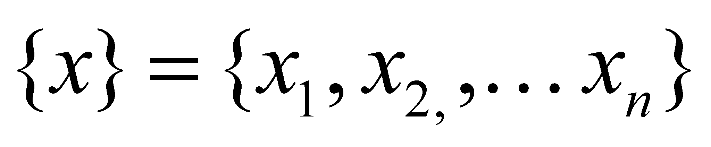 (X.23.1.1)
where xk 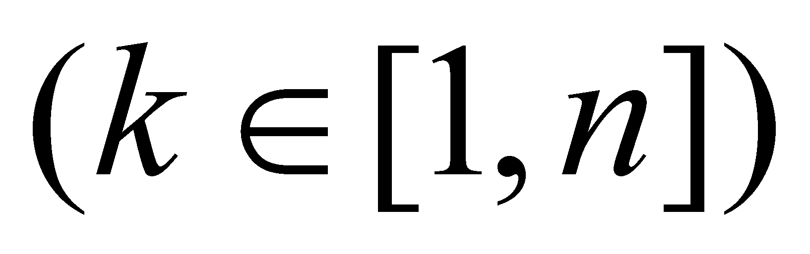 is the symbolical (syntactical) singular value related to the individual abstract container (elementary, with the boundaries marked by commas) with the running number k, which belongs to the global container with the boundaries {} and the amount:
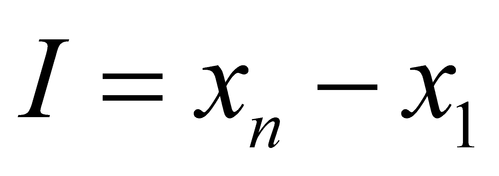 (X.23.1.2)
represents (only for numerical values) the value interval of the variable.
Within the relation X.23.1.1, x represents an abstract object such as the m-ranked class of numerical values (where m is the abstraction level of this kind of class). Since the numerical values may belong to various types (fractional, integers, natural, imaginary, prime, real, complex, etc), each of these identifiers (specific attributes) designates a particular class, an instance with the abstraction rank m-p of the class x. In this context, p is the integer number of specific attributes associated to the class x, in order to obtain a particular class (an instance with m-p rank).
Comment X.23.1.1: It is worth mentioning the connection between the term instance and the particular attribute. In case of a class of numerical values, such as the natural numbers, an instance of this class is any natural number (a singular, particular value). But a particular object (an instance) is also the class of natural numbers {N}, as one of the possible sub-classes of the set {R}.
The most general class of numerical values is {R}, the so-called set of real numbers. By adding a specific property to the model {R}, a subclass is generated, which is also a set of numerical values, but these values have a common specific property. If we are changing a model property from the model {R} which is valid for all the elements of the set, an equipotent class with {R} is obtained. For instance, the class of the imaginary numbers {I} is made-up from {R} by means of an artificial reverse of the symbol assignment convention for the result of the multiplication operation (see the annex X.3.1). Thus, a class of numerical values equipotent with {R} is formed, which has in common with {R} only the absolute internal reference (zero value), it is therefore a totally disjoint set and independent from {R}, that is a reason why its geometrical representation is a perpendicular axis on the axis of the real numbers.
If the property is specific to only a portion from {R} (a partition), then a subset shall result. For example, the class {Q} (class of the rational numbers) has a specific property in the fact that the elements of the class are the result of a ratio 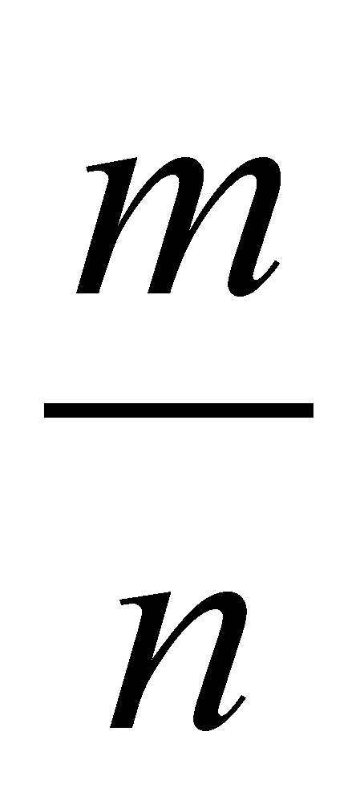(where m and n are integers).
Comment X.23.1.2: Another important remark is that a property which is specific to a class of objects is a model property, common to all the class’ objects, which allows the distinction (differentiation) between classes. In the above-mentioned examples, the properties which allow the distinction of the variable classes are clearly specific model properties.
An instance of one of these numerical value classes is a singular value from the set of possible values indicated in the right side of the relation X.23.1.1, that is a concrete numerical value. In case of the ordered sets, the attribute which is specific to a certain element is the running number of the individual container. This running number, although it is just a number, is a qualitative attribute which designates the position of the set element within the set (it is a structure attribute).
In chapter 2, we saw that a distribution is a set of assignment relations between the concrete values of two variable classes: the independent variable x and the dependent variable y, relations such as:
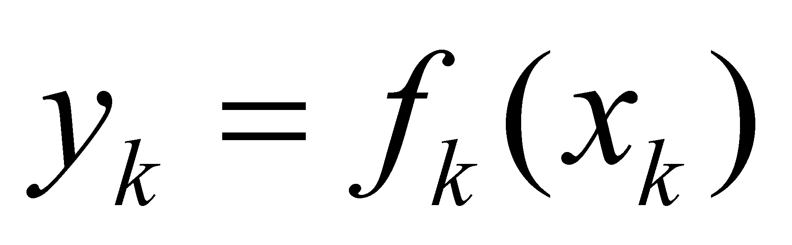 (X.23.1.3)
or:
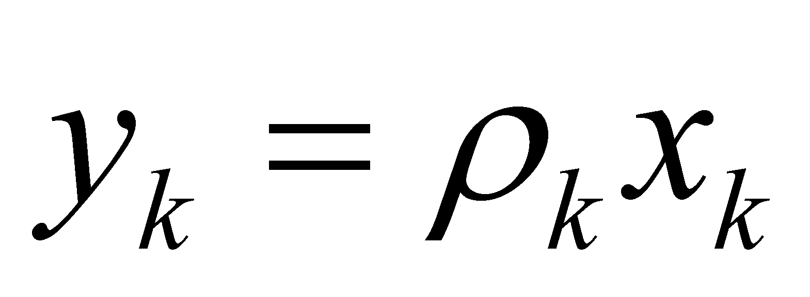 (X.23.1.4)
The relations X.23.1.3 or X.23.1.4 represents abstract generating processes between the actual values 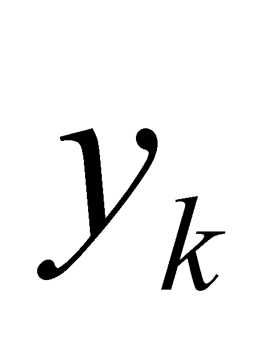 and the actual values 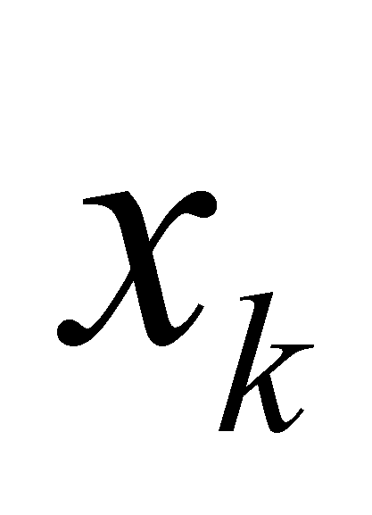, processes which, in the most general case, are specific to each value , which means that each assignment relation has another concrete syntactic value 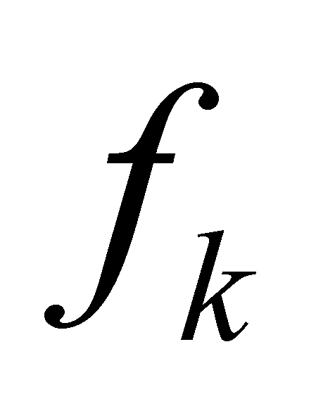 or 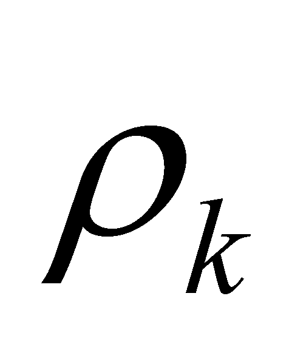. If all the concrete generating processes deployed between the objects from class y and the objects from class x have a common component, that is the same syntactic value f (the same symbol, same structure, independent from the concrete value ), then it may be written that 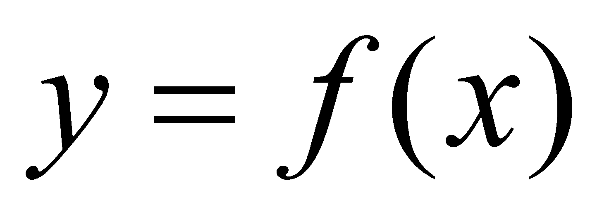. Therefore, the continuous algebraic functions are invariant abstract generating processes between two classes of variables, and the values’ domain of the support variable which keeps the invariance of the syntactic value f is the function’s continuity domain.
Copyright © 2006-2011 Aurel Rusu. All rights reserved.